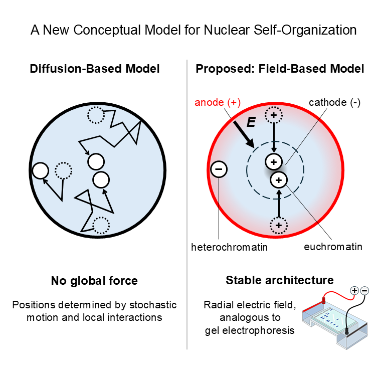

The Electric Genome
A mechanistic hypothesis for nuclear architecture and gene expression bias.
The Electric Genome is a novel physics-based model for nuclear organization and gene expression regulation. It proposes that weak electrostatic forces, rather than just biochemical interactions, shape how the genome is radially positioned within the cell nucleus and consequently influence gene expression levels. A key strength of the model is its ability to generate clear, experimentally testable predictions. If validated, this framework could lead to new approaches in spatial genome engineering and to novel therapeutic strategies that target gene expression by modifying chromatin charge. This interdisciplinary perspective, uniting biophysics, computational modeling, and molecular biology, advances a fully integrated four-dimensional view of genome regulation.
A New Conceptual Model for Nuclear Self-Organization
After mitosis, nuclei rapidly regain their radial pattern. Instead of diffusion alone, the field-based model suggests an electrophoresis-like process that moves chromatin to charge-matched radial zones, restoring stable architecture.
A New Conceptual Model for Nuclear Self-Organization
After mitosis, nuclei rapidly regain their radial pattern. Instead of diffusion alone, the field-based model suggests an electrophoresis-like process that moves chromatin to charge-matched radial zones, restoring stable architecture.
The Electric Genome Hypothesis
The spatial organization of the nucleus is highly structured, yet the physical mechanism behind this organization is still unclear. The Electric Genome Hypothesis proposes that a steady electric field at the nuclear envelope acts on charged macromolecules in the nucleus, so that chromatin and nuclear bodies move until they reach an electrostatic balance.
DNA itself is uniformly negative, but chromatin is not. Proteins that bind DNA, such as histones and transcription factors, add positive and negative charges in patterns that depend on the underlying sequence. For example, GC rich regions usually bind more histones and are therefore less negative than AT rich regions.
In this framework, less negative chromatin and positively charged nuclear bodies such as speckles and nucleoli tend to occupy more internal positions, while more negative chromatin remains closer to the nuclear periphery. This charge based organization provides a possible route from small sequence or epigenetic differences to spatial differences between alleles, gene expression bias, and variable disease risk.
BioEssays article
A detailed version of this model is presented in:
The Electric Genome: A Mechanistic Hypothesis for Nuclear Architecture and Gene Expression Bias
BioEssays, 2025
DOI: 10.1002/bies.70076
Shared Access: Free Version
The article develops the electrostatic framework in more detail, compares it with existing models of nuclear organization, and suggests ways to test the predictions using existing and future data.
Selected publications
Talks
About
Ifat Keydar is a bioinformatician with research experience in nuclear organization, gene regulation, and allele-specific expression. Her earlier studies on expression bias in the human brain and on the nuclear positioning of alternative splicing events led her to develop the Electric Genome Hypothesis, which proposes an electrostatic basis for nuclear architecture and expression bias. She completed her PhD at the Weizmann Institute of Science and conducted postdoctoral research at the Icahn School of Medicine at Mount Sinai. This site presents her independent conceptual work on the Electric Genome model.
Electrophoresis and its radial analogue as a physical model for nuclear organization.